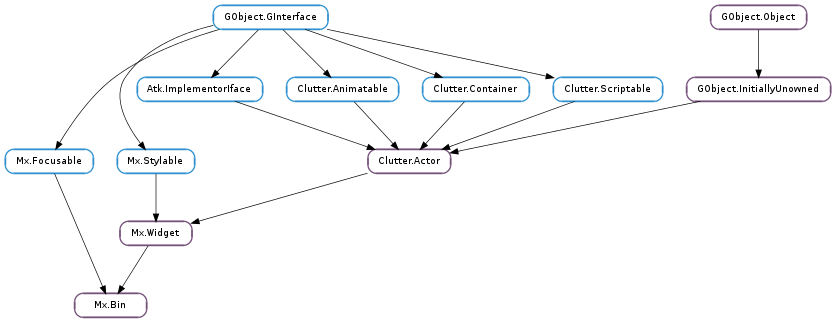

| Subclasses: | Mx.Button, Mx.Dialog, Mx.Expander, Mx.Frame, Mx.KineticScrollView, Mx.ScrollBar, Mx.ScrollView, Mx.Toolbar, Mx.Viewport |
|---|
| allocate_child(box, flags) | |
| get_alignment(x_align, y_align) | |
| get_child() | |
| get_fill() | |
| set_alignment(x_align, y_align) | |
| set_child(child) | |
| set_fill(x_fill, y_fill) |
| Name | Type | Flags | Description |
|---|---|---|---|
| child | Clutter.Actor | r/w | The child of the Bin |
| x-fill | bool | r/w | Whether the child should fill the horizontal allocation |
| y-fill | bool | r/w | Whether the child should fill the vertical allocation |
None
Bases: Mx.Widget, Mx.Focusable
The Mx.Bin struct contains only private data
| Parameters: |
|
|---|
Allocates the child of an Mx.Bin using the width and height from box. This function should usually only be called by subclasses of Mx.Bin.
This function can be used to allocate the child of an Mx.Bin if no special allocation requirements are needed. It is similar to Mx.allocate_align_fill, except that it reads the alignment, padding and fill values from the Mx.Bin, and will call Clutter.Actor.allocate on the child.
| Parameters: |
|---|
Retrieves the horizontal and vertical alignment of the child inside a Mx.Bin, as set by Mx.Bin.set_alignment ().
| Returns: | a Clutter.Actor, or None |
|---|---|
| Return type: | Clutter.Actor |
Retrieves a pointer to the child of bin.
| Return type: | x_fill: bool, y_fill: bool |
|---|
Retrieves the horizontal and vertical fill settings
| Parameters: |
|---|
Sets the horizontal and vertical alignment of the child inside a Mx.Bin.
| Parameters: | child (Clutter.Actor) – a Clutter.Actor, or None |
|---|
Sets child as the child of bin.
If bin already has a child, the previous child is removed.